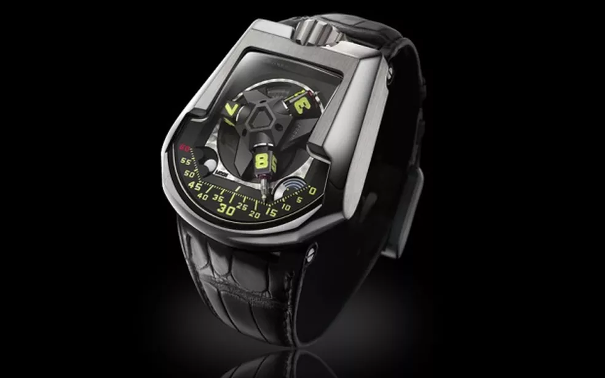
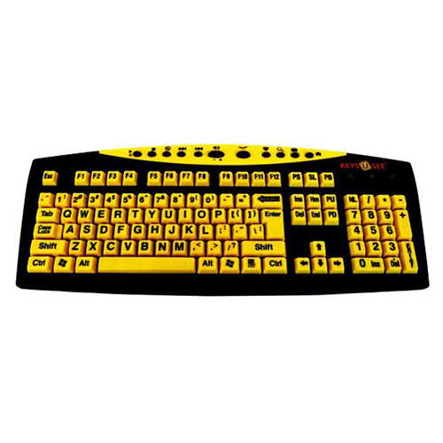
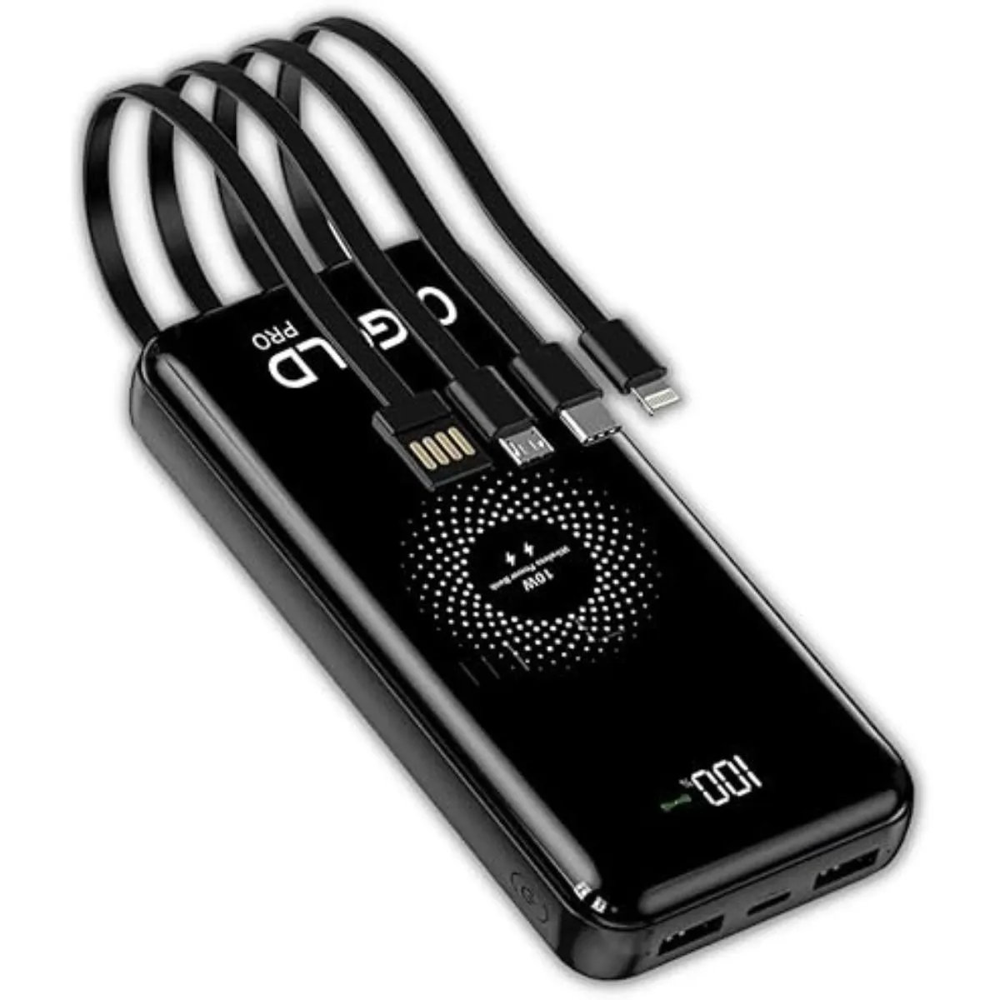

Sobre a loja
Prime Connect é uma loja online dedicada a trazer o melhor do universo tecnológico para você. Nosso objetivo é conectar pessoas às inovações que facilitam o dia a dia, oferecendo produtos modernos, de alta qualidade e com design inteligente. Seja para estudar, trabalhar ou se divertir, aqui você encontra soluções tech que acompanham o ritmo da sua vida digital.
Produtos

Smartwatch Prime Pulse
Um relógio inteligente que monitora sua saúde em tempo real, com funções de batimentos cardíacos, oxigenação do sangue e notificações integradas ao celular. Resistente à água e com bateria de longa duração, é ideal para quem busca praticidade e bem-estar.

Fone Bluetooth Prime Sound
Fones sem fio com cancelamento de ruído ativo, som estéreo de alta definição e conexão rápida. Compactos e confortáveis, são perfeitos para ouvir música, atender chamadas ou se concentrar nos estudos sem distrações.

Teclado Mecânico Prime Key RGB
Teclado gamer com switches mecânicos de alta performance, iluminação RGB personalizável e design ergonômico. Ideal para quem busca precisão nos jogos e conforto para longas horas de uso.

Carregador Portátil Prime Power 20.000mAh
Power bank ultracompacto com capacidade de 20.000mAh, duas entradas USB e carregamento rápido. Um aliado indispensável para manter seus dispositivos sempre prontos, seja em viagens ou no dia a dia.